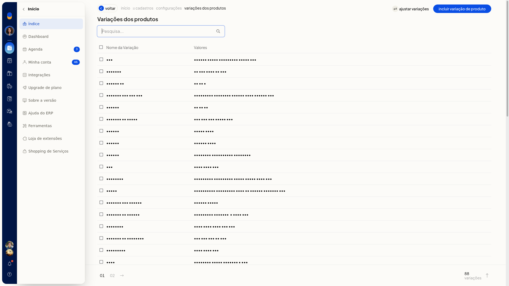

Ajustar variações movendo valores entre variações
No ERP da Olist, você move valores de uma variação de produto para outra. A origem e o destino são variações já cadastradas, e você escolhe quais valores serão transferidos.
O ajuste fica na lista de variações, em Configurações > Cadastros.
Pré-requisitos
- A variação de origem e a variação de destino já precisam estar cadastradas.
Instruções
-
Acesse Configurações > Cadastros e abra as configurações de variações de produtos.
-
Na lista de variações, clique em Ajustar variações.

-
Escolha a variação de origem e a variação de destino e marque os valores que serão movidos.

-
Clique em Mover selecionados.